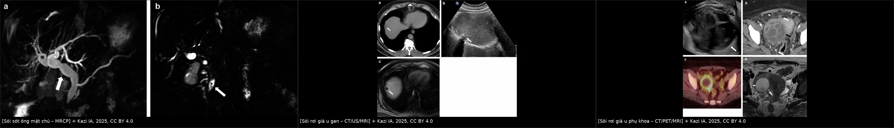
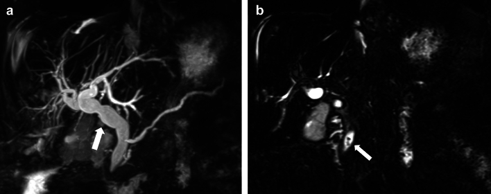
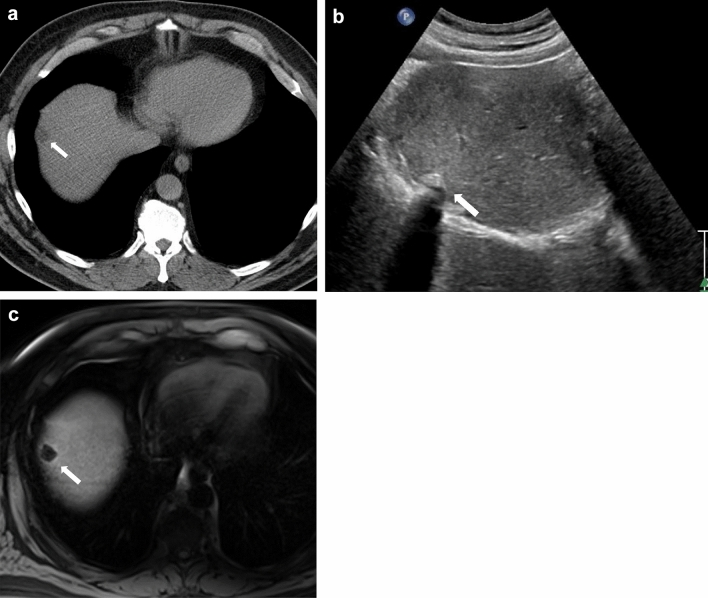
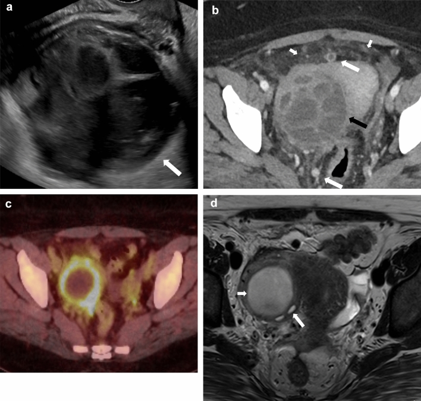

1940 — Sỏi sót, sỏi tái phát và sỏi rơi sau cắt túi mật / Retained, recurrent and dropped gallstones
Tags: pattern:khuyet-tin-hieu pattern:soi-duong-mat vung:duong-mat vung:tui-mat vung:o-bung protocol:MRCP protocol:EUS score:ASGE-choledocholithiasis
Mức chắc chắn (certainty): tổng hợp y văn (literature synthesis) — dựa trên tổng quan biến chứng sau cắt túi mật có 3 ca minh họa (Abdom Radiol 2025, PMC11711778), nghiên cứu dân số GallRiks về sỏi sót (Surg Open Sci 2026, PMC12905770), phân tích gộp Cochrane EUS vs MRCP (2015, PMC6464848), so sánh CT vs MRI/MRCP 691 ca (Cureus 2025, PMC12569963) và các ca sỏi mỏm ống túi mật/sỏi rơi giả u. Không có ca do nhóm tự chụp.
Câu hỏi thực hành: nữ 75 tuổi, cắt túi mật nội soi 3 năm trước, nay đau hạ sườn phải + vàng da nhẹ, ALP tăng, siêu âm thấy đường mật trong gan giãn nhưng không thấy sỏi. Có phải "đau do cắt túi mật" không, và chụp gì tiếp? Bài chốt ba quyết định: (1) đau/vàng da sau cắt túi mật không được mặc định là "hội chứng sau cắt túi mật" — phải loại sỏi sót ống mật chủ, sỏi mỏm ống túi mật, hẹp đường mật; (2) MRCP là lựa chọn đầu tay (sens 0,93, spec 0,96), EUS tương đương (sens 0,95, spec 0,97) và dùng khi MRCP âm tính mà nghi ngờ cao; (3) sỏi rơi trong mổ là nguyên nhân hay bị quên nhất — nó tạo u hạt/áp-xe ở phúc mạc, có thể giả di căn phúc mạc hoặc u buồng trứng trên CT/PET.
1. Tổng quan bệnh học – cơ chế hình ảnh
- Ba cơ chế khác nhau, ba bộ hình ảnh khác nhau:
- Sỏi sót (retained): sỏi đã có trong ống mật chủ nhưng bị bỏ sót lúc mổ (không thấy trên X-quang mổ/đường mật đồ trong mổ, hoặc sỏi nhỏ trôi lên trên).
- Sỏi mỏm ống túi mật/túi mật còn lại (stump/remnant): gặp khi cắt túi mật bán phần (subtotal) hoặc mỏm ống túi mật còn dài — sỏi nằm trong mỏm, gây "Mirizzi sau cắt túi mật" (post-cholecystectomy Mirizzi syndrome).
- Sỏi rơi (dropped/spilled): sỏi rơi ra khoang phúc mạc khi túi mật thủng trong mổ; sỏi trở thành dị vật → u hạt, áp-xe, dò, hiếm khi tắc ruột.
- Tần suất — đây là biến chứng phổ biến, không hiếm: sỏi rơi gặp trong 36% ca cắt túi mật nội soi (báo cáo khác: tới 40%); 16–50% số sỏi rơi không lấy hết; 0,1–6% bệnh nhân có biến chứng; trong số có biến chứng, 50–60% là áp-xe ổ bụng/thành bụng/sau phúc mạc.
- Sỏi sót ống mật chủ sau mổ — số liệu dân số: trong đoàn hệ 386 bệnh nhân được nghi ngờ sỏi ống mật chủ, 182 (47,2%) có sỏi trên đường mật đồ trong mổ; sau mổ, 33/182 (18,1%) xuất hiện sỏi sót được xác nhận (24 ca có ERCP ghi nhận, 9 ca chỉ ghi trong hồ sơ). Tức là gần 1/5 bệnh nhân có sỏi đã thấy trong mổ vẫn còn sỏi sau mổ — đây là lý do không được "tin" một lần sạch sỏi.
- TẠI SAO MRCP thấy sỏi còn CT thường âm tính: sỏi cholesterol gần như đồng đậm độ với dịch mật, nên trên CT không tách khỏi mật; chỉ sỏi cản quang (giàu calci) mới thấy rõ. Ngược lại, trên chuỗi T2 nặng (MRCP), dịch mật sáng rực còn sỏi không có proton linh động → hiện thành khuyết tín hiệu (signal void). Chính vì vậy không khí, dòng chảy, mỏm tá tràng, chèn ép mạch cũng tạo khuyết tín hiệu và bắt chước sỏi.
- TẠI SAO sỏi rơi lại tạo khối giả u: sỏi là dị vật không tan; phản ứng viêm quanh sỏi tạo vỏ xơ ngấm thuốc + mô hạt, có thể vôi hóa viền và dính vào phúc mạc/tạng. Trên CT, tổn thương là nốt/khối mô mềm ± vôi hóa, không có đặc điểm của sỏi → dễ đọc thành di căn phúc mạc; trên PET/CT, viêm hoạt động cho tăng chuyển hóa viền → dương tính giả.
- Số liệu chẩn đoán hình ảnh (dùng để chọn phương thức): so sánh trên 691 bệnh nhân (tỉ lệ sỏi 45%): MRI/MRCP sens 92,7%, spec 91,9%, độ chính xác 92,3%, AUC 0,95; CT 73,2% / 82,9% / 78,3% / AUC 0,83; đánh giá lâm sàng 71,1% / 87,1% / 80%. Phân tích gộp Cochrane: EUS sens 0,95 (0,91–0,97), spec 0,97 (0,94–0,99) — 13 nghiên cứu, 1.537 người; MRCP sens 0,93 (0,87–0,96), spec 0,96 (0,90–0,98) — 7 nghiên cứu, 996 người; không khác biệt (p = 0,5). Với xác suất trước 41%, kết quả EUS dương đưa xác suất sau lên 0,96, âm xuống 0,03.
2. Mẫu hình + chẩn đoán phân biệt theo vị trí (gamut)
- Mẫu hình 1 — khuyết tín hiệu trong ống mật: sỏi trong OMC/ống gan chung/ống túi mật, kèm giãn đường mật thượng lưu; bờ khuyết tròn, đều, nằm trong lòng ống, không đổi theo tư thế.
- Mẫu hình 2 — cấu trúc cản quang/tăng đậm độ: trên CT, sỏi calci hóa là điểm tăng đậm độ; sỏi trong mỏm ống túi mật nằm ở rãnh túi mật, sát gan phải, có thể làm mỏm giãn thành nang (ca báo: mỏm giãn từ nhẹ lúc 241 ngày lên > 40 mm với sỏi 9 mm sau 2 năm 122 ngày).
- Mẫu hình 3 — ổ dịch/nốt phúc mạc có sỏi ở trung tâm: sỏi rơi tạo u hạt (nốt đặc, có thể vôi hóa) hoặc áp-xe (ổ dịch vỏ ngấm thuốc ± khí); vị trí hay gặp: dưới gan, khoang Morison, mặt hoành phải, hố chậu, thành bụng tại lỗ trocar.
- Gamut theo vị trí — 5 nhóm cần nghĩ khi "đau/vàng da sau cắt túi mật":
- Trong lòng ống mật chủ: sỏi sót, sỏi tái phát, sỏi nguyên phát (LPAC — đột biến ABCB4/MDR3).
- Trong mỏm ống túi mật/túi mật còn lại: sỏi mỏm, hẹp mỏm, Mirizzi sau cắt túi mật.
- Tại miệng nối/hẹp đường mật: hẹp sau mổ, rò mật, kẹp clip di trú làm nidus.
- Khoang phúc mạc: sỏi rơi → u hạt, áp-xe, dò.
- Ngoài ổ bụng (hiếm): sỏi rơi di trú lên ngực hoặc đường niệu.
3. Bảng so sánh phân biệt (ma trận đối chiếu)
| Thực thể (entity) | Hình ảnh điển hình | Chốt vào (rule-in) | Chốt loại (rule-out) | Gợi ý xác nhận |
|---|---|---|---|---|
| Sỏi sót ống mật chủ | Khuyết tín hiệu tròn, trong lòng OMC, giãn đường mật thượng lưu; CT có thể âm tính | Khuyết tín hiệu nằm trong lòng ống + giãn thượng lưu + tiền sử sỏi | Khuyết tín hiệu ở thành/ngoài lòng ống, đổi theo tư thế → khí/dòng chảy | MRCP; EUS nếu MRCP âm mà nghi cao; ERCP để điều trị |
| Sỏi mỏm ống túi mật / Mirizzi sau cắt túi mật | Sỏi trong mỏm giãn thành nang ở rãnh túi mật; có thể chèn ép OMC gây vàng da | Cấu trúc dạng nang ở rãnh túi mật + sỏi trong đó + tiền sử cắt bán phần | Nang ống mật chủ (vị trí trong gan/ngoài gan, không sát rãnh túi mật) | MRCP + EUS; CT thấy mỏm giãn |
| Sỏi rơi — u hạt (granuloma) | Nốt đặc ± vôi hóa viền, sát gan/mặt hoành/hố chậu; không có sỏi trong đường mật | Tiền sử túi mật thủng/sỏi rơi trong mổ + nốt ở vị trí điển hình | Không có tiền sử rơi sỏi + nốt mới, tăng kích thước → phải loại u | US (ổ tăng âm + bóng lưng), CT; chỉ sinh thiết khi không thể loại u |
| Sỏi rơi — áp-xe | Ổ dịch vỏ ngấm thuốc, có thể có khí, sỏi ở trung tâm ổ | Ổ dịch + cấu trúc cản quang trung tâm + tiền sử rơi sỏi | Ổ dịch không có sỏi + sốt cao đơn thuần → áp-xe vi khuẩn thông thường | CT/US; dẫn lưu không đủ nếu còn sỏi — cần lấy sỏi |
| Sỏi tái phát/nguyên phát (LPAC) | Nhiều sỏi trong gan + OMC sau cắt túi mật, tái diễn nhiều đợt | Tái phát nhiều lần + sỏi trong gan + tiền sử gia đình | Một đợt sỏi đơn độc sau mổ → nghĩ sỏi sót hơn | MRCP; xét gen ABCB4 khi tái phát sớm |
| Di căn phúc mạc / u buồng trứng (bắt chước) | Nốt phúc mạc nhiều ổ, khối phần phụ phức hợp, PET dương tính viền | Nốt + bệnh ác đang theo dõi | Tiền sử sỏi rơi + nốt không tăng theo thời gian + có cấu trúc cản quang trung tâm → nghĩ sỏi | Đối chiếu phim cũ; tránh sinh thiết mù; hỏi kỹ biên bản mổ |
| Clip phẫu thuật di trú | Cấu trúc cản quang hình chữ V/thẳng trong OMC hoặc mỏm, gây sỏi quanh clip | Hình dạng clip + vị trí đúng chỗ đặt clip cũ | Không có hình dạng clip → sỏi thật | CT (clip rõ), MRCP (clip = khuyết tín hiệu) |

Trái: MRCP — giãn đường mật + sỏi sót ở đoạn cuối OMC (khuyết tín hiệu). Giữa: sỏi rơi ở vòm gan phải — CT giảm đậm độ, siêu âm tăng âm + bóng lưng, MRI khuyết tín hiệu. Phải: sỏi rơi gây áp-xe hố chậu với nốt phúc mạc và PET tăng chuyển hóa viền — giả u phụ khoa/di căn. Nguồn: Kazi IA và cs, Abdom Radiol 2025 (PMC11711778), CC BY 4.0. Ảnh ghép letterbox, không crop.Hai dấu hiệu quyết định "sỏi thật" hay "bắt chước"
- Dấu "trong lòng ống" (intraluminal): khuyết tín hiệu bị bao quanh hoàn toàn bởi dịch mật sáng ở mọi bình diện → sỏi. Nếu khuyết chạm thành hoặc nằm ngoài lòng ống → nghĩ khí, clip, chèn ép mạch.
- Dấu "bóng lưng sạch" (clean posterior shadowing) trên siêu âm: sỏi cho bóng lưng rõ, đều; khí cho bóng lưng bẩn, lẫn vệt ("dirty shadowing") và di chuyển khi đổi tư thế/ấn đầu dò.
4. Protocol chụp + hệ phân tầng nguy cơ
- Bước 1 — siêu âm bụng (đầu tay): đánh giá giãn đường mật, sỏi trong túi mật/mỏm, dịch quanh gan, và quét cả khoang phúc mạc (dưới gan, mặt hoành, hố chậu, lỗ trocar) bằng đầu dò tần số cao khi nghi sỏi rơi nhỏ (vài mm).
- Bước 2 — MRCP (không cần cản quang): chuỗi T2 nặng 3D + thick slab, đọc khuyết tín hiệu trong lòng ống, đo đường kính OMC và mức giãn; luôn đối chiếu 2 bình diện để loại khí/dòng chảy. Nếu MRCP âm mà nghi ngờ cao → EUS.
- Bước 3 — CT có cản quang: dùng cho ổ dịch, áp-xe, nốt phúc mạc, sỏi calci hóa, biến chứng mạch; không dùng CT để loại trừ sỏi cholesterol.
- Bước 4 — ERCP: là điều trị, không phải xét nghiệm chẩn đoán; chỉ định theo phân tầng nguy cơ ASGE 2019:
- Yếu tố mạnh: sỏi thấy trên hình ảnh, viêm đường mật lâm sàng, bilirubin toàn phần > 4 mg/dL → nguy cơ cao, ERCP trước/xuất viện.
- Yếu tố trung bình: OMC giãn > 6 mm (khi còn túi mật), bilirubin 1,8–4 mg/dL, tuổi > 55 → nguy cơ trung bình, làm MRCP/EUS trước.
- Không yếu tố nào → nguy cơ thấp, không ERCP mù.
- Với sỏi rơi: không có "phân độ" hình ảnh — quyết định dựa trên có triệu chứng/áp-xe hay không: sỏi rơi không triệu chứng thường theo dõi; áp-xe/tắc ruột/dò → lấy sỏi (nội soi phúc mạc qua da, phẫu thuật nội soi, hoặc mổ).
flowchart TD
A[Đau hoac vang da sau cat tui mat] --> B[Sieu am bung]
B --> C{Duong mat gian hoac thay soi?}
C -->|Co| D[MRCP]
C -->|Khong nhung nghi cao| E[EUS]
D --> F{Thay khuyet tin hieu trong long ong?}
E --> F
F -->|Co| G[Xac suat soi cao - ERCP dieu tri]
F -->|Khong| H[Tim nguyen nhan khac: hep, roi mat, soi mom ong tui mat]
B --> I{Co o dich hoac not phuc mac?}
I -->|Co| J[CT co can quang]
J --> K{Co tien su soi roi trong mo?}
K -->|Co| L[Theo doi hoac lay soi neu co trieu chung]
K -->|Khong| M[Loai tru u - tranh sinh thiet mu]
5. Biến thể bình thường và cạm bẫy
- Khuyết tín hiệu "giả sỏi" trên MRCP: khí sau cắt cơ vòng Oddi/ERCP cũ, dòng chảy, mỏm tá tràng lớn (prominent duodenal papilla), mạch máu chèn ép, clip. Đọc trên nhiều bình diện và so trước–sau là bắt buộc.
- Siêu âm "không thấy sỏi" không loại trừ sỏi OMC: khí tá tràng và đoạn cuối OMC nằm sau tá tràng là điểm mù kinh điển.
- Sỏi rơi bị đọc thành di căn: ca 63 tuổi có tiền sử leiomyosarcoma, 10 tháng sau cắt túi mật xuất hiện nốt phúc mạc nghi tái phát; sinh thiết qua CT không kết luận, nội soi ổ bụng mới thấy sỏi rơi + viêm u hạt. Bài học: hỏi biên bản mổ trước khi kết luận ung thư.
- PET dương tính không đồng nghĩa ung thư: áp-xe quanh sỏi cho tăng chuyển hóa viền — bẫy trực tiếp của ca hố chậu ở hình trên.
- Dẫn lưu ổ áp-xe mà bỏ sỏi = thất bại: sỏi là dị vật, ổ sẽ tái lập hoặc thành dò; phải lấy sỏi.
- "Đau do cắt túi mật" là chẩn đoán loại trừ: trước khi gắn nhãn, phải loại sỏi sót/mỏm, hẹp đường mật, rò mật, viêm tụy, loét dạ dày, đau thành bụng (bài 1967).
6. Tự lượng giá — Blind Quiz
Ca 1 — Nữ 75 tuổi, cắt túi mật 3 năm trước, đau hạ sườn phải + vàng da nhẹ, ALP tăng, siêu âm chỉ thấy giãn đường mật. Nhìn MRCP, mô tả trước.

- Hỏi: có bao nhiêu khuyết tín hiệu? Nằm trong lòng ống hay ngoài? Vì sao siêu âm và CT có thể âm tính? Bước tiếp theo là chẩn đoán hay điều trị?
Bấm để hiện đáp án (findings + chẩn đoán)
- Dấu hiệu: (a) MIP MRCP — giãn đường mật trong và ngoài gan (mũi tên); (b) 3D SPACE — khuyết tín hiệu tròn ở đoạn cuối ống mật chủ, bao quanh hoàn toàn bởi dịch mật sáng.
- Chẩn đoán: sỏi sót ống mật chủ sau cắt túi mật.
- Vì sao siêu âm/CT âm: sỏi cholesterol đồng đậm độ dịch mật nên CT không tách; OMC đoạn cuối bị khí tá tràng che trên siêu âm.
- Vì sao MRCP: sỏi không có proton linh động → khuyết tín hiệu trên nền mật sáng; sens 0,93, spec 0,96 (Cochrane).
- Bước tiếp theo: ERCP điều trị (không phải "chụp lại để xác nhận" nhiều lần) khi có vàng da + giãn đường mật.
- Nguồn: Kazi IA và cs, Abdom Radiol 2025 (PMC11711778), CC BY 4.0.
Ca 2 — Nam 51 tuổi, cắt túi mật vài tháng trước, nấc cụt dai dẳng; CT ngực bình thường nhưng thấy một tổn thương ở vòm gan phải. Ba phương thức của cùng tổn thương:

- Hỏi: mỗi phương thức cho thấy gì? Tổn thương đặc hay dịch? Dấu hiệu nào trên siêu âm quyết định? Có nên sinh thiết?
Bấm để hiện đáp án (findings + chẩn đoán)
- Dấu hiệu: (a) CT không cản quang — tổn thương giảm đậm độ ở vòm gan phải (mũi tên); (b) siêu âm — ổ tăng âm kèm bóng lưng ở vùng dưới hoành, ấn vào gan phải; (c) MRI T1 — khuyết tín hiệu tương ứng.
- Chẩn đoán: sỏi rơi (dropped gallstone) ở khoang dưới hoành, tạo phản ứng mô quanh sỏi — không phải u gan.
- Vì sao CT giả "tổn thương dịch": sỏi cholesterol đồng đậm độ, phần viêm quanh sỏi tạo giảm đậm độ; chỉ siêu âm mới lộ bản chất dị vật tăng âm + bóng lưng.
- Có nên sinh thiết: không khi đã có bóng lưng + tiền sử cắt túi mật; sinh thiết mù sỏi dễ gây dò/nhiễm.
- Nguồn: Kazi IA và cs, Abdom Radiol 2025 (PMC11711778), CC BY 4.0.
Ca 3 — Nữ 46 tuổi, cắt túi mật trước đó, nay khối hố chậu; siêu âm thấy khối phần phụ phức hợp; CT có nốt phúc mạc, PET dương tính.

- Hỏi: hình ảnh gợi ý u buồng trứng/di căn phúc mạc hay viêm? Dấu hiệu nào trên PET dễ đánh lừa? Câu hỏi bệnh sử nào phải đặt ra trước khi mổ?
Bấm để hiện đáp án (findings + chẩn đoán)
- Dấu hiệu: (a) siêu âm — khối phức hợp đa vách ở phần phụ; (b) CT — khối ngấm thuốc không đều, mất mặt phẳng mỡ với tử cung, nốt phúc mạc tròn; (c) PET/CT — tăng chuyển hóa ở viền khối; (d) MRI T2 — giảm vách, tăng tín hiệu dịch, khối dính buồng trứng phải.
- Chẩn đoán: áp-xe hố chậu do sỏi rơi; các "nốt phúc mạc" là sỏi + viêm u hạt (giải phẫu bệnh xác nhận), không phải di căn.
- Vì sao PET đánh lừa: viêm hoạt động quanh sỏi cho tăng chuyển hóa viền — giống di căn phúc mạc/u buồng trứng.
- Câu hỏi bệnh sử: "lúc mổ túi mật có thủng/túi mật vỡ và có ghi nhận rơi sỏi không?" — nếu có, đừng sinh thiết mù, tìm cấu trúc cản quang trong ổ trên CT và bóng lưng trên siêu âm.
- Nguồn: Kazi IA và cs, Abdom Radiol 2025 (PMC11711778), CC BY 4.0.
Bài liên quan chéo
- 130 – Túi mật: bình thường và bệnh lý
- 131 – Tắc mật: tiếp cận và phân biệt
- 107 – MRCP và gadoxetic acid (HBP)
- 108 – Tổn thương đường mật sau cắt túi mật (Strasberg–Bismuth)
- 141 – Phúc mạc: dịch, nốt, dày
- 1925 – Viêm túi mật cấp trong thai kỳ
- 1930 – Sỏi mật không biến chứng trong thai kỳ
Không dùng để chẩn đoán độc lập khi chưa có người hướng dẫn.